Mecanismos 101
Objetivo: Entender cómo los mecanismos transforman el movimiento (velocidad ↔ par, rotación ↔ traslación, continuo ↔ intermitente), calcular relaciones de transmisión simples y aplicarlo al tren motriz del carro — tocando mecanismos reales en un taller de estaciones.
1. ¿Por qué mecanismos?
Un motor DC "pelón" gira muy rápido y con muy poco par: no puede mover casi nada directamente. Los mecanismos son el intercambio de moneda de la mecánica:
Sacrificas velocidad para ganar fuerza (o al revés), o cambias el tipo de movimiento.
Tu carro es el ejemplo perfecto: los motores amarillos "TT" que usamos traen una caja reductora interna de ~1:48 — el motorcito de adentro gira ~9600 rpm y la rueda sale a ~200 rpm, pero con 48 veces más par. Sin esa caja, el carro no se movería.
flowchart LR
M[Motor<br>rápido, débil] --> T[Transmisión<br>engranes, bandas...] --> S[Salida<br>lenta, fuerte]2. Conceptos base
2.1 Palancas (la máquina más antigua)
La ventaja mecánica es la relación de brazos: brazo largo del lado de tu esfuerzo = menos fuerza necesaria (pero más recorrido). Las tres clases se distinguen por dónde está el punto de apoyo (fulcro) respecto a la carga y el esfuerzo — tijeras, carretilla y pinzas son una de cada clase.
2.2 Biela-manivela
Convierte rotación ↔ traslación: es el corazón del motor de combustión (pistón → cigüeñal) y de mecanismos de vaivén. Obsérvalo: la velocidad del extremo no es constante aunque la manivela gire parejo — se detiene por completo en los extremos del recorrido.
2.3 Relación de transmisión (la fórmula del día)
Para dos engranes acoplados con \( Z_1 \) dientes (entrada) y \( Z_2 \) dientes (salida):
- \( i > 1 \): reducción → sale más lento pero con más par.
- \( i < 1 \): multiplicación → sale más rápido pero con menos par.
- El par y la velocidad se intercambian: \( \omega_2 = \omega_1 / i \) y \( \tau_2 = \tau_1 \cdot i \) (menos las pérdidas por fricción).
Trenes compuestos: las relaciones se multiplican. Dos etapas de 1:4 dan 1:16. Así la caja del motor TT logra 1:48 en un espacio diminuto.
Ejemplo resuelto: piñón de 12 dientes mueve engrane de 36:
3. Taller de estaciones (los modelos impresos)
En el laboratorio hay mecanismos impresos en 3D, funcionales. Van a rotar en equipos por las estaciones. En cada una: muévelo con la mano, observa, y llena la ficha de la sección 4.
Regla del taller
Gíralos con suavidad — son PLA, no acero. Si algo se traba, no lo fuerces: observar por qué se traba también es aprender mecanismos.
Estación A · Diferencial

En una curva, la rueda exterior recorre más distancia que la interior: si ambas giraran igual, una tendría que patinar. El diferencial reparte el giro permitiendo velocidades distintas con un solo motor.
Pruébalo: detén una salida con el dedo mientras giras la entrada — ¿qué hace la otra rueda?
Conexión con tu carro: tu carro NO trae este mecanismo… porque tiene un motor por rueda: el "diferencial" lo hace el software al mandar M,izq,der con velocidades distintas. Se llama dirección diferencial (y este modelo te muestra el problema que resuelve).
Estación B · Reductor cicloidal
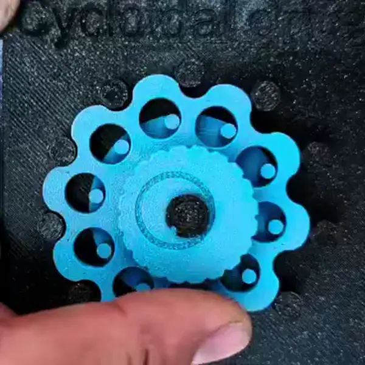
Reducción enorme en muy poco espacio, con poco juego (backlash). Es el mecanismo favorito de las articulaciones de robots industriales.
Pruébalo: cuenta cuántas vueltas de entrada necesitas para una vuelta de salida — esa es su relación \( i \). ¿Va en el mismo sentido la salida que la entrada?
Estación C · Junta cardán (universal)
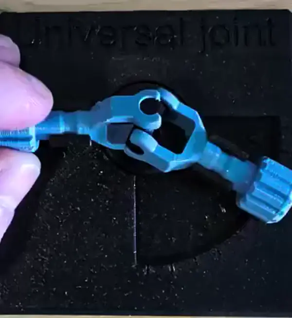
Transmite rotación entre ejes que forman un ángulo (la flecha de transmisión de camionetas).
Pruébalo: gira la entrada a velocidad constante con el eje doblado y fíjate en la salida — no gira pareja: acelera y desacelera dos veces por vuelta. Entre más ángulo, peor. (Por eso las flechas reales usan cardán doble.)
Estación D · Obturador de láminas (leaf shutter)
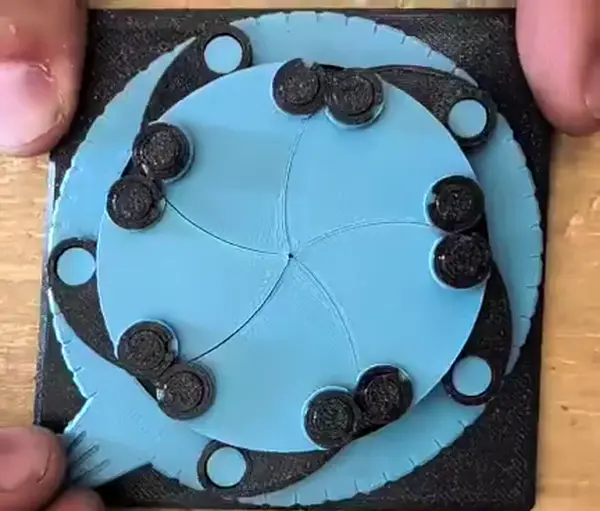
Varias láminas sincronizadas por un solo anillo: un movimiento de entrada, muchas salidas coordinadas. Es el mecanismo del diafragma/obturador de las cámaras fotográficas.
Conexión con visión: el obturador controla el tiempo de exposición. ¿Recuerdas el motion blur que hace perder los marcadores ArUco cuando el carro va rápido? Es exactamente esto: exposición larga = imagen movida. La mecánica y la visión por computadora se tocan aquí.
Estación E1 · Transformar el movimiento
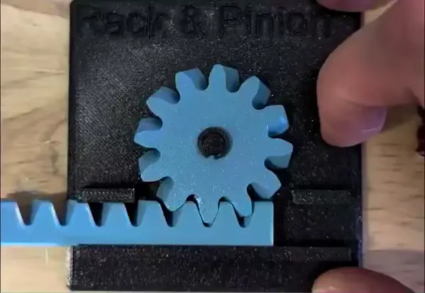
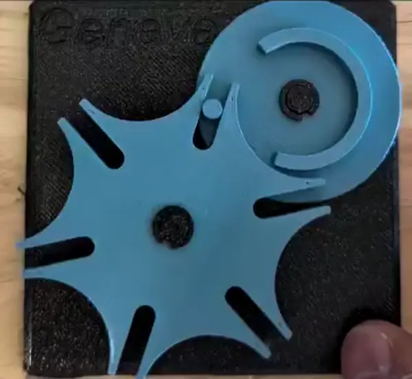
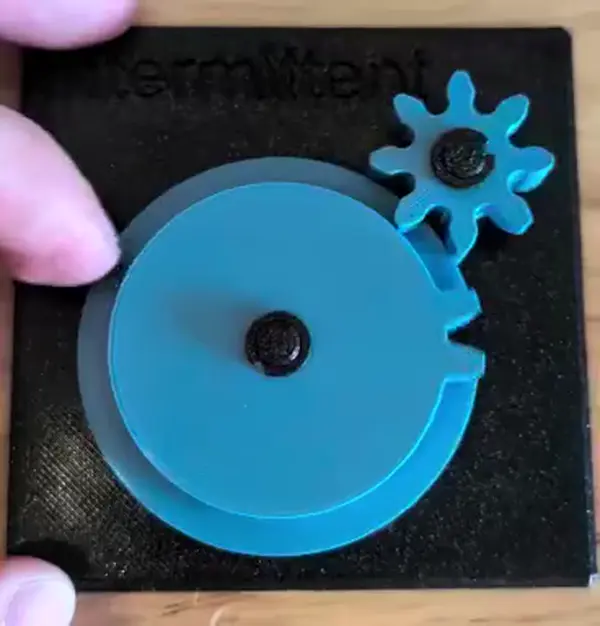
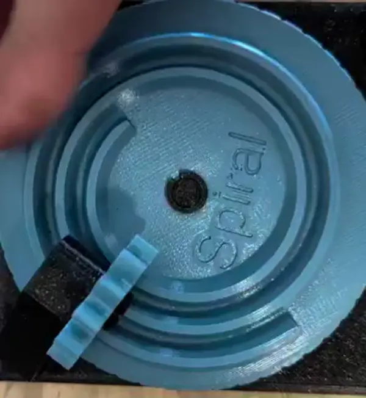
La pregunta central de esta estación: ¿qué tipo de movimiento entra y cuál sale?
| Mecanismo | Qué hace | Dónde vive |
|---|---|---|
| Cremallera y piñón helicoidal | Rotación → traslación | Dirección de los autos, ejes de impresoras 3D |
| Cruz de Ginebra | Rotación continua → intermitente (avanza por pasos y se bloquea entre ellos) | Proyectores de cine, indexadores, relojería |
| Engrane intermitente | Transmite solo en parte del giro (sin bloqueo entre pasos) | Contadores mecánicos, temporizadores |
| Espiral de Arquímedes | Relación de transmisión variable durante la vuelta | Levas, mecanismos de retorno rápido |
Pruébalos en pareja: gira la Ginebra y el intermitente uno junto al otro a la misma velocidad — los dos producen movimiento "a ratos", pero uno se bloquea entre pasos y el otro queda libre. ¿En qué aplicación importaría esa diferencia?
Pregunta obligada (Ginebra): si la cruz tiene \( n \) ranuras, ¿cuántas vueltas del impulsor necesita para dar una vuelta completa? ¿Cuántos grados avanza por "paso"?
Estación E2 · Redirigir y reducir
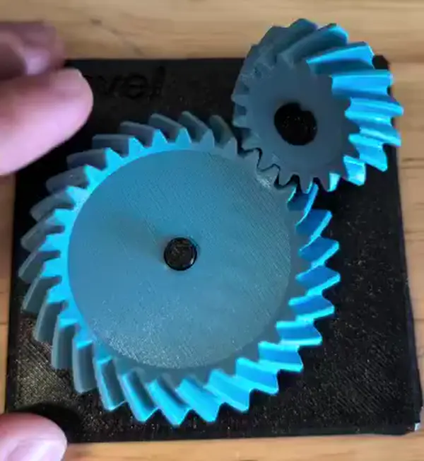
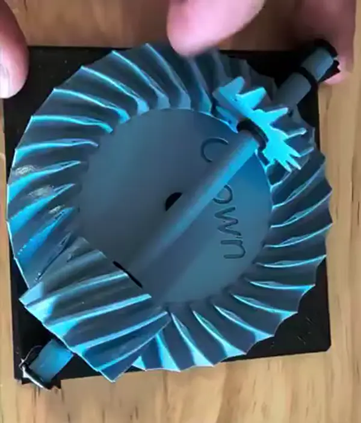
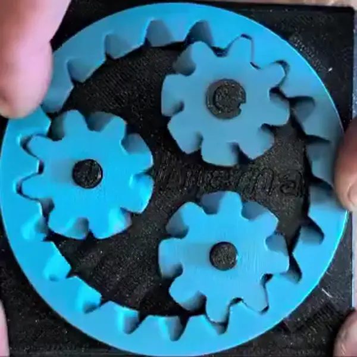
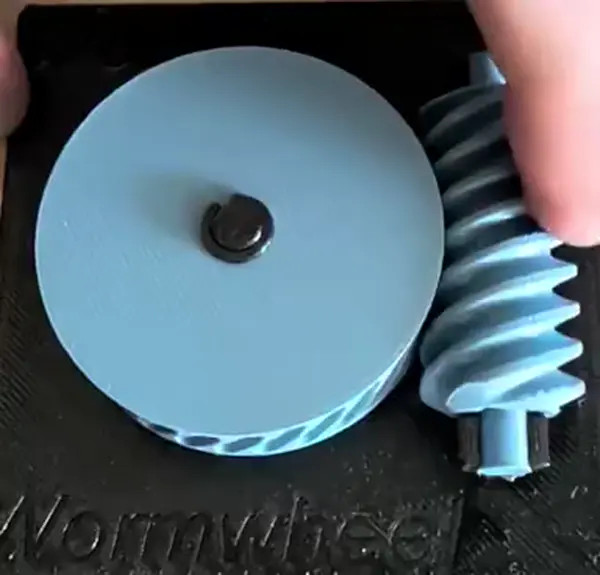
La pregunta central de esta estación: ¿cuánto reduce, hacia dónde saca el giro, y se puede mover al revés?
| Mecanismo | Qué hace | Dónde vive |
|---|---|---|
| Cónico espiral | Cambia el eje de giro 90° | Diferenciales, taladros angulares |
| Corona (crown gear) | 90° con engrane plano | Batidoras, juguetes |
| Engrane interno helicoidal | Reducción compacta, ejes al mismo lado y mismo sentido de giro | Trenes planetarios, cajas de bicicleta |
| Sinfín multi-hilo + corona | Reducción grande en una sola etapa | Reductores de portones, afinadores de guitarra |
Pruébalos comparando: cuenta dientes y estima la relación \( i \) de cada uno — en esta mesa hay desde relaciones cercanas a 1:1 hasta la más grande de todo el taller. ¿Cuál da más reducción por centímetro cúbico?
Pregunta obligada (sinfín): intenta mover la corona empujándola directamente (con el sinfín acoplado). ¿Se deja? Esa propiedad se llama autobloqueo — el sinfín puede mover a la corona, pero la corona no puede mover al sinfín. ¿Para qué sirve eso en un robot? (Pista: sostener una carga sin gastar energía.)
4. Ficha de estación (llénala en cada una)
Copia esta tabla en tu bitácora, una fila por estación:
| Estación | ¿Qué transforma? (vel↔par, rot↔trasl, continuo↔intermitente, cambio de eje) | Relación \( i \) estimada (cuenta dientes o vueltas) | ¿Reversible o autobloqueante? | ¿Dónde lo has visto en la vida real? | ¿Dónde serviría en el carro o en un proyecto tuyo? |
|---|---|---|---|---|---|
| A · Diferencial | |||||
| B · Cicloidal | |||||
| C · Cardán | |||||
| D · Obturador | |||||
| E1 · (elige 2 de la mesa) | |||||
| E2 · (elige 2 de la mesa) |
5. Hoja de ejercicios (el entregable)
Resuelve con procedimiento (no solo el resultado):
1. Tren simple. Un piñón de 10 dientes mueve un engrane de 40. Si el motor entrega 300 rpm y 0.1 N·m, ¿a qué velocidad y con qué par gira la salida? (Ignora pérdidas.)
2. Tren compuesto. Dos etapas: 12→36 dientes y luego 10→40 dientes. ¿Relación total? Si la entrada gira a 960 rpm, ¿la salida?
3. Sinfín. Un sinfín de 2 hilos mueve una corona de 40 dientes. ¿Relación de transmisión? (Pista: en un sinfín, \( Z_1 \) = número de hilos.) ¿Cuántas vueltas del sinfín para una de la corona?
4. Cruz de Ginebra. La del laboratorio tiene sus ranuras a la vista: cuéntalas y calcula grados por paso y vueltas del impulsor por vuelta completa de la cruz.
5. Tu carro (velocidad). El motor TT tiene reducción interna 1:48 y a 6 V la rueda gira ~200 rpm sin carga. Con ruedas de 65 mm de diámetro:
¿Cuál es la velocidad máxima teórica del carro en m/s? ¿Por qué en el piso real será menor?
6. Tu carro (dirección diferencial). Si la rueda izquierda va a 0.4 m/s, la derecha a 0.6 m/s y la separación entre ruedas es \( L = 0.12 \) m:
Calcula la velocidad del centro, la velocidad de giro y el radio de la curva que describe. Fíjate: estas son exactamente las ecuaciones detrás del izq = v - w, der = v + w que usa el script de visión del Tema 6 — la mezcla diferencial no era un truco de software, era cinemática.
7. Diseño. Quieres que tu carro sea el doble de "fuerte" para empujar la pelota en el torneo, aceptando ir a la mitad de velocidad. Propón una relación de engranes adicional entre motor y rueda y calcula la nueva velocidad máxima.
6. Mini-prototipo (para quien quiera ir más allá)
Con cartón, palitos y silicón — o en la impresora 3D de Proyectos 1 — construye un mecanismo de los que viste y móntalo en video funcionando. Ideas: una palanca con ventaja mecánica medible, una biela-manivela, un tren de dos engranes de cartón con relación 1:2 verificable contando vueltas.
7. Entregables de la sesión (van al portafolio)
- Ficha de estaciones completa (sección 4), con fotos tuyas de los mecanismos.
- Hoja de ejercicios resuelta con procedimiento (sección 5).
- (Opcional, cuenta como extra) Mini-prototipo con video corto funcionando.
Glosario rápido
- Relación de transmisión (i): cociente de velocidades entrada/salida; intercambia velocidad por par.
- Reducción: salida más lenta y con más par que la entrada.
- Backlash (juego): holgura entre dientes; se siente como "flojera" al invertir el giro.
- Autobloqueo: el mecanismo transmite en un sentido pero no puede ser movido desde la salida (sinfín).
- Movimiento intermitente: avance por pasos con bloqueo entre ellos (cruz de Ginebra).
- Dirección diferencial: girar mediante velocidades distintas en cada rueda, sin ruedas direccionales.